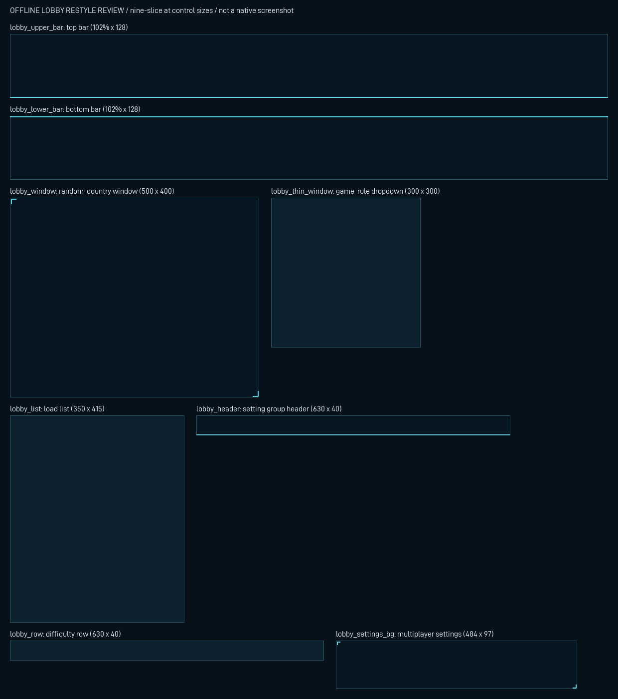

Restyle and hide (user, 5 November 2026); buttons, checkboxes and sliders wait for an engine capture (phase 2).
8 restyled, 4 hidden, 39 kept on the engine. Not native rendering evidence.

| Engine sprite | Disposition | Replacement | Reason |
|---|---|---|---|
GFX_game_settings_bg | restyle | GFX_ac_briefing_lobby_settings_bg | Background of the multiplayer settings strip. |
GFX_no_frame_special_bg | restyle | GFX_ac_briefing_lobby_list | Background of the load and ironman save lists. |
GFX_tiled_frontend_lower_bar | restyle | GFX_ac_briefing_lobby_lower_bar | Background of the lobby bottom bar (bottom/bottom_win and bottom/background/bottom_win). |
GFX_tiled_frontend_upper_bar | restyle | GFX_ac_briefing_lobby_upper_bar | Background of the lobby top bar (top/top_bg and top/background/top_bg). |
GFX_tiled_generic_bg_1 | restyle | GFX_ac_briefing_lobby_row | Background of the difficulty and game-rule rows and dropdown entries. |
GFX_tiled_header_1 | restyle | GFX_ac_briefing_lobby_header | Background of each game-setting group header. |
GFX_tiled_window2_1b_border | restyle | GFX_ac_briefing_lobby_window | Window background of the random-country and custom-settings windows. |
GFX_tiled_window_1b_thin_border | restyle | GFX_ac_briefing_lobby_thin_window | Background of the expanded more-countries list and the game-rule dropdown. |
GFX_load_save_bottom_screen | hide | GFX_ac_briefing_lobby_hidden | Ornamental art below the load and ironman-save dialogs. |
GFX_load_save_top_screen | hide | GFX_ac_briefing_lobby_hidden | Ornamental art above the load and ironman-save dialogs. |
GFX_small_pol_piechart_frame | hide | GFX_ac_briefing_lobby_hidden | Decorative ring over the engine-drawn political pie chart. |
GFX_small_pol_piechart_overlay | hide | GFX_ac_briefing_lobby_hidden | Decorative shading over the engine-drawn political pie chart. |
GFX_changed_slider_indicator | keep_engine | | Slider part; frame layout must match the engine slider (phase 2 capture). |
GFX_country_filter_entry | keep_engine | | Country filter entry button (phase 2 capture). |
GFX_custom_set_button_2 | keep_engine | | Button with engine state frames (phase 2 capture). |
GFX_custom_setting_slider_bg | keep_engine | | Slider track; frame layout must match the engine slider (phase 2 capture). |
GFX_difficulty_button_civilian | keep_engine | | Difficulty button with engine state frames (phase 2 capture). |
GFX_difficulty_button_elite | keep_engine | | Difficulty button with engine state frames (phase 2 capture). |
GFX_difficulty_button_recruit | keep_engine | | Difficulty button with engine state frames (phase 2 capture). |
GFX_difficulty_button_regular | keep_engine | | Difficulty button with engine state frames (phase 2 capture). |
GFX_difficulty_button_veteran | keep_engine | | Difficulty button with engine state frames (phase 2 capture). |
GFX_enabled_achievement_icons | keep_engine | | Functional achievement-eligibility indicator. |
GFX_expand_button | keep_engine | | Button with engine state frames (phase 2 capture). |
GFX_expand_collapse_sideways | keep_engine | | Button with engine state frames (phase 2 capture). |
GFX_extended_country_button | keep_engine | | Button with engine state frames (phase 2 capture). |
GFX_flag_small | keep_engine | | Engine flag renderer; country-specific. |
GFX_flag_small2 | keep_engine | | Engine flag renderer; country-specific. |
GFX_game_rule_option_disallow_achievements | keep_engine | | Functional achievement-eligibility indicator. |
GFX_generic_bg | keep_engine | | Fixed-size label background; its size needs the installed game (phase 2 capture). |
GFX_generic_checkbox | keep_engine | | Checkbox with engine state frames (phase 2 capture). |
GFX_generic_checkbox2 | keep_engine | | Checkbox with engine state frames (phase 2 capture). |
GFX_idea_unknown | mod_override | | Still bound by name; the vanilla visual scrub redefines it with mod art in interface/zz_ac_visual_scrub.gfx (docs/VANILLA_VISUAL_SCRUB.md). |
GFX_ironman_icon | keep_engine | | Functional ironman indicator. |
GFX_large_flag_frame | keep_engine | | Fixed-size frame fitted to the engine flag; its size needs the installed game (phase 2 capture). |
GFX_leader_unknown | mod_override | | Still bound by name; the vanilla visual scrub redefines it with mod art in interface/zz_ac_visual_scrub.gfx (docs/VANILLA_VISUAL_SCRUB.md). |
GFX_lobby_country_mapmode_strip | keep_engine | | Map-mode button strip with engine frames (phase 2 capture). |
GFX_lobby_country_mapmode_strip_selected | keep_engine | | Selected map-mode strip with engine frames (phase 2 capture). |
GFX_mapicon_unit_flag_stripe | keep_engine | | Engine flag stripe on spirit entries; country-specific. |
GFX_menu_top_bg_bg | keep_engine | | Fixed-size date background; its size needs the installed game (phase 2 capture). |
GFX_naval_unit_leader_frame | keep_engine | | Fixed-size portrait frame; its size needs the installed game (phase 2 capture). |
GFX_observer_button | keep_engine | | Button with engine state frames (phase 2 capture). |
GFX_observer_button_overlay | keep_engine | | Button overlay with engine state frames (phase 2 capture). |
GFX_peace_drop_down_button | keep_engine | | Dropdown button with engine state frames (phase 2 capture). |
GFX_play_button | keep_engine | | Start button with engine state frames (phase 2 capture). |
GFX_play_button_ready | keep_engine | | Ready-state Start button with engine state frames (phase 2 capture). |
GFX_player_flag | keep_engine | | Engine flag renderer; country-specific. |
GFX_political_chart_small | keep_engine | | The engine-drawn political pie chart itself. |
GFX_save_load_file_btn | keep_engine | | Save-list entry button with engine state frames (phase 2 capture). |
GFX_scroll_drager | keep_engine | | Scrollbar part; frame layout must match the engine scrollbar (phase 2 capture). |
GFX_scroll_track_horisontal | keep_engine | | Scrollbar track; frame layout must match the engine scrollbar (phase 2 capture). |
GFX_select_date_1936 | mod_override | | Still bound by name; the vanilla visual scrub redefines it with mod art in interface/zz_ac_visual_scrub.gfx (docs/VANILLA_VISUAL_SCRUB.md). |
GFX_shield_medium | keep_engine | | Engine flag shield; country-specific. |
GFX_tiled_window_transparent | keep_engine | | Already transparent; nothing to restyle. |
GFX_unplayed_content_notification | keep_engine | | Functional new-content notification. |